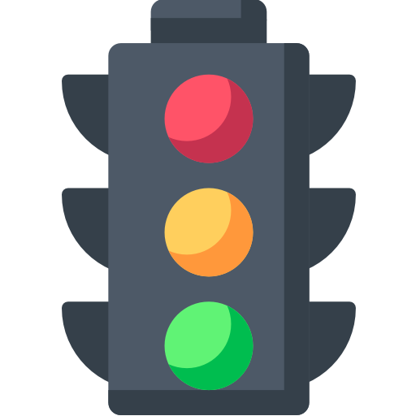
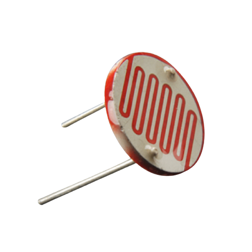
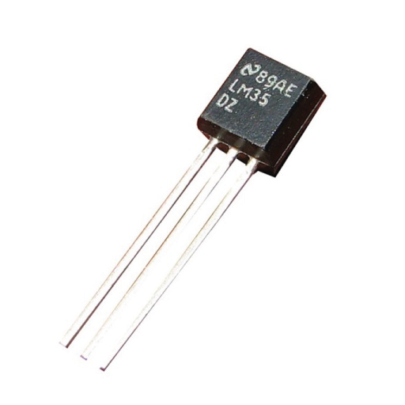
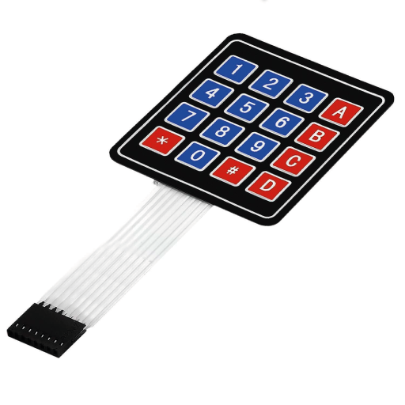
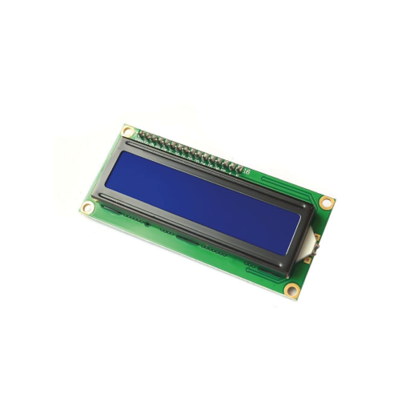
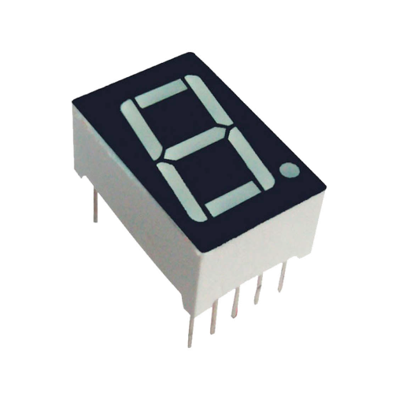

Este es un proyecto en el que se utilizaron 3 LED para simular un semáforo tal y como se ve al salir a la calle pero en una escala mucho más pequeña; este semáforo cuenta con un sistema de alerta cuando va a cambiar de verde a naranjado para posteriormente estar en rojo.

Este es un proyecto en el que se enciende 1 LED mediante la lectura de una fotocelda progrmada en Arduino; en el programa de Arduino podemos observar los cambios de voltaje cuando hay poca luz y cuando hay mucha, lo que nos permite hacer una calibración mediante 1 potenciómetro y así poder utilizar el proyecto sin importar el lugar en el que nos encontremos.

Este es un proyecto en el que se enciende 1 LED cuando el sensor de temperatura detecta una temperatura determinada; esta temperatura puede ser programada en Arduino para disminuir el umbral y así tener menos errores. Se puede cambiar el LED por 1 buzzer activo o pasivo para que suene en forma de alerta para incendios.

Este es un proyecto en el que se programa un teclado 4x4 con Arduino para que muestre en el monitor serial de Arduino las teclas que se presionen. Con este teclado se pueden realizar muchas funciones, entre ellas, se puede programar una calculadora o establecer como un tablero para ingresar una contraseña y desbloquear un segmento de código.

Este es un proyecto en el que se programa un display LCD 16X2 para que se muestra el mensaje "Hello World" y "Hola Mundo".

Este es un proyecto en el que se realiza el conteo de 0 a 9 utilizando el display 7 segmentos. Se realiza el código en Arduino para mostrar los números con un tiempo de muestra de 1 segundo.